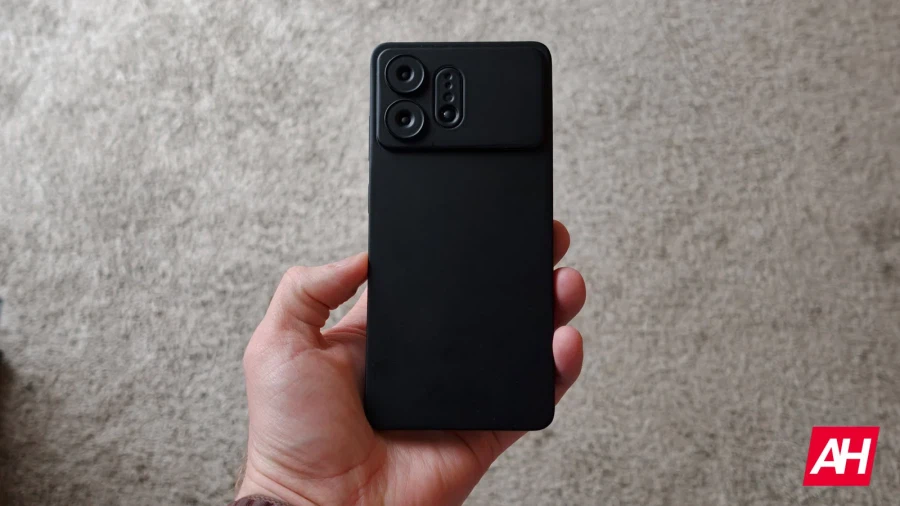
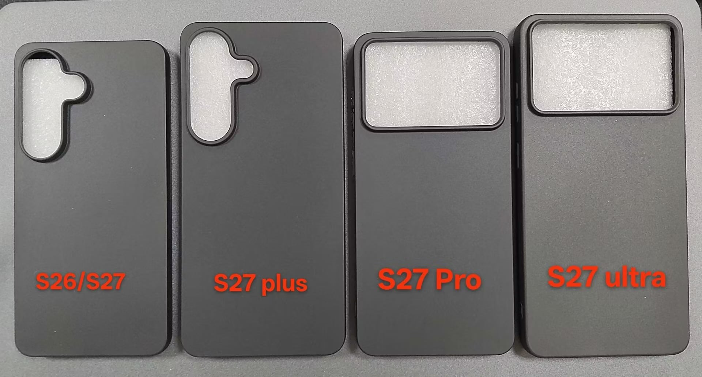
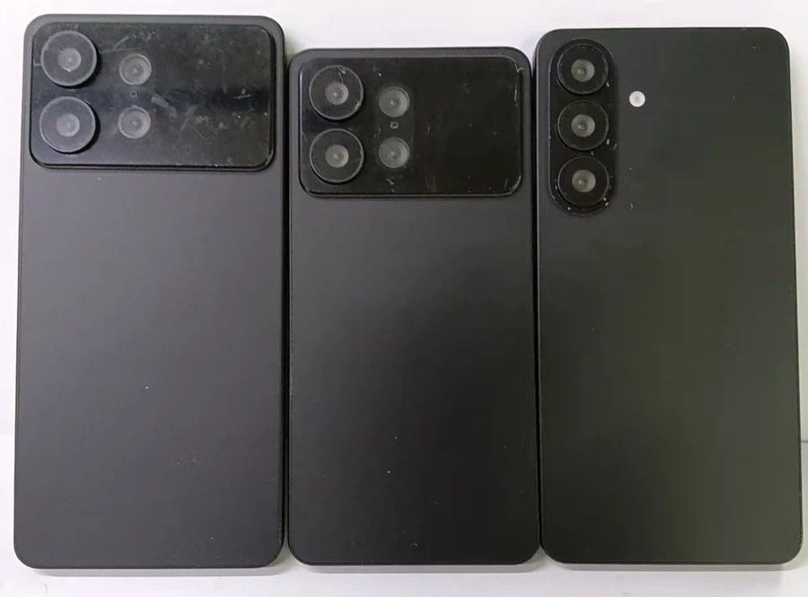
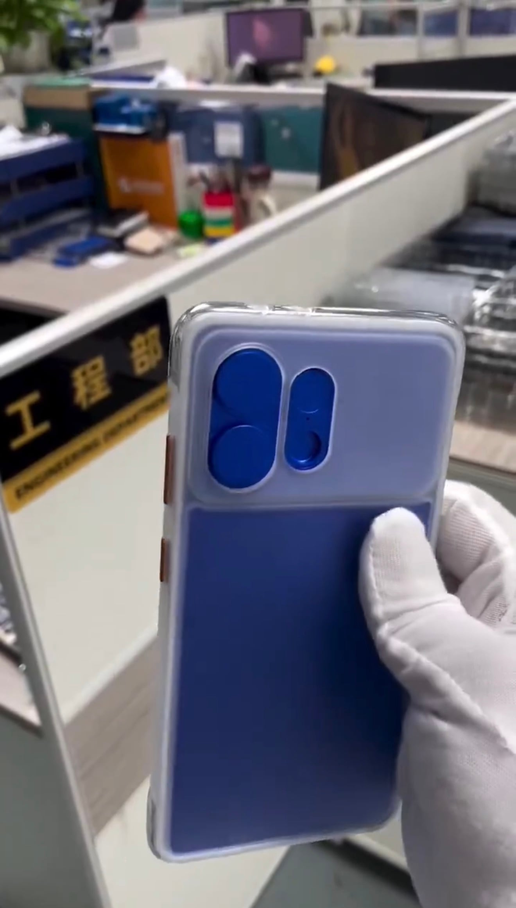

걍 시바 카메라 개구린거 써도되니까 카툭튀좀 없었으면 좋겠음 ㅋㅋ
ㄹㅇ 개인싸도 아니라서 사진 찍을일도 별로 없는데
폰이 저민큼 두꺼워 지면 가능
아니 폴드는 잘뽑아놓고 그걸 다시 저걸로 리셋한다고?.
폴드9사야겠지?
중국폰 디자인 감성인데
다음 폴드 카메라는 가로로 나와다오..
저만큼 공간확보하는 이유가 있어야할거같은데
그냥 아이폰 따라하는거라면 진짜 줏대없는듯..
보통 저 두께를 보드를올려서 폰 얇게 만드는데 쓰는듯?
도저히 저 카메라툭튀어나오는건 기술적으로 해결을 못하는거임??